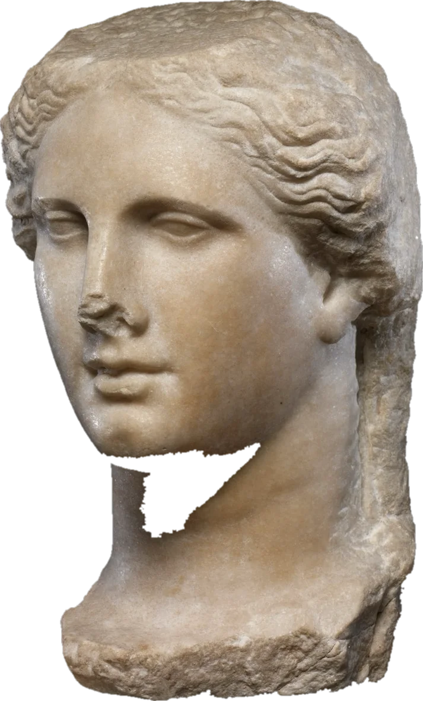
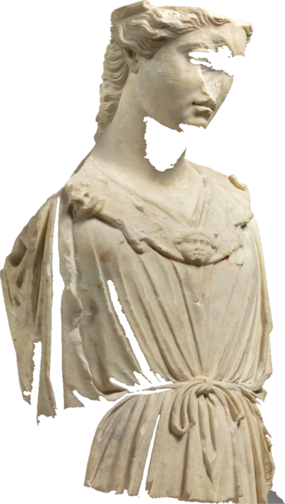

Психолог · КПТ · онлайн
Помогаю услышать себя, найти собственные опоры и двигаться к жизни, которая соответствует вашим ценностям.

01 — О подходе
Мысли — не факты, а гипотезы
Я работаю в когнитивно-поведенческой терапии (КПТ). Вместе мы исследуем причины сложностей, учимся справляться с негативными мыслями, укрепляем уверенность в себе и выстраиваем реальные шаги к желаемым изменениям.
Я убеждён, что каждый человек способен изменить качество своей жизни, если рядом есть поддержка, понимание и эффективные психологические инструменты.
- Метод
- Когнитивно-поведенческая терапия
- Языки
- Русский, английскийSessions are available in English
Образование
- Бакалавриат
- Магистратура
- Курсы
- Когнитивно-поведенческая терапия
- Сообщество
02 — Метод
Когнитивно-поведенческая терапия
КПТ исходит из простой идеи: на наше состояние влияет не столько сама ситуация, сколько мысли о ней. Изменив мысли и привычные действия, можно изменить и самочувствие.
-
Про настоящее
Разбираем то, что мешает сейчас, а в прошлое идём только за объяснением сегодняшних реакций.
-
С планом и целью
В начале формулируем, что именно должно измениться, и сверяемся с этим по ходу работы.
-
С практикой между встречами
Небольшие задания и наблюдения — так изменения переходят из кабинета в жизнь.
03 — Запросы
С чем можно прийти
Индивидуальные сессии онлайн, 50 минут.
Стоимость — 5 000 ₽
-
Тревога и панические атаки
Когда беспокойство не отпускает, мешает спать, работать и быть рядом с близкими.
-
Депрессивные состояния и выгорание
Апатия, усталость, которую не снимает отдых, и ощущение, что ничего не радует.
-
Самооценка и неуверенность в себе
Постоянное «недостаточно хорошо», жёсткая самокритика, трудность опираться на себя.
-
Трудности в отношениях
Партнёрских, семейных, межличностных: конфликты, повторяющиеся сценарии, одиночество рядом с другими.
-
Личные и профессиональные цели
Как поставить цель, которая действительно ваша, и превратить её в реальные шаги.
04 — Консультация
Как это происходит
-
Шаг 1
Заявка
Напишите в мессенджер или оставьте заявку ниже. Я отвечу в течение дня и предложу время.
-
Шаг 2
Первая встреча
Знакомимся, вы рассказываете, что привело. Ничего не нужно формулировать заранее — начнём с того, что есть.
-
Шаг 3
Общий запрос
Вместе определяем, что для вас важно изменить, и договариваемся о ритме встреч.
-
Шаг 4
Регулярная работа
Встречи раз в неделю и небольшие задания между ними — чтобы изменения переходили из кабинета в жизнь.
05 — Отзывы
Что говорят после встреч
-
Пришла с тревогой, которая не давала спать. За несколько встреч разобрались, какие мысли её раскручивают, и у меня появились понятные инструменты.
-
Ценно, что всё по делу: каждая встреча заканчивается конкретным шагом. Через два месяца я впервые за год взялся за то, что откладывал.
-
Боялась, что будет неловко. Оказалось спокойно: меня не оценивали и не давили, можно было говорить в своём темпе.
-
Работали онлайн, и это совсем не помешало. Самокритики стало заметно меньше, а решения даются легче.
06 — Запись
Первый шаг можно сделать тихо
Всё, что вы напишете, останется между нами.
